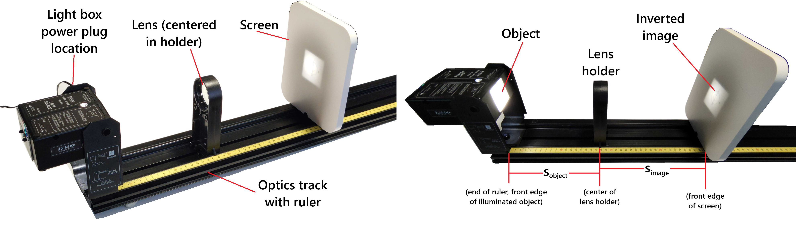
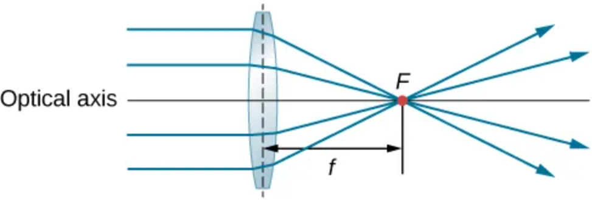
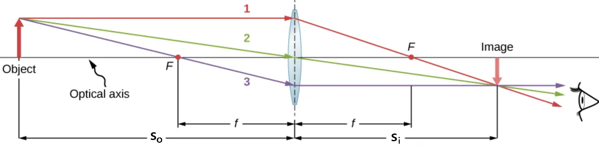
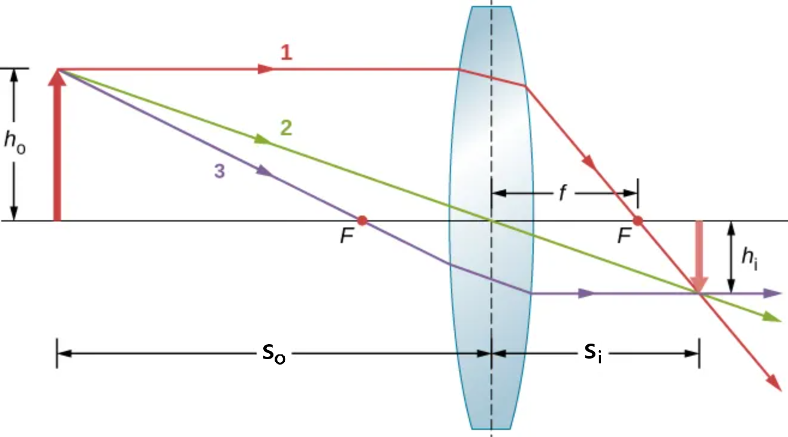
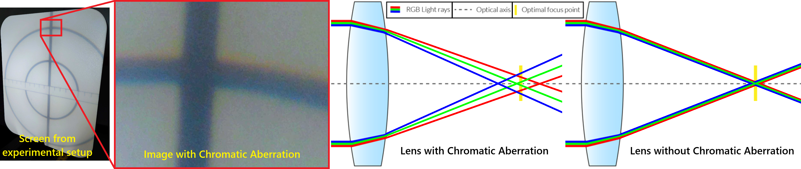
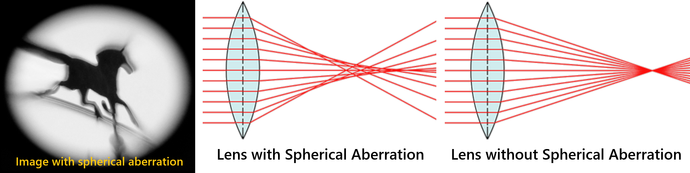
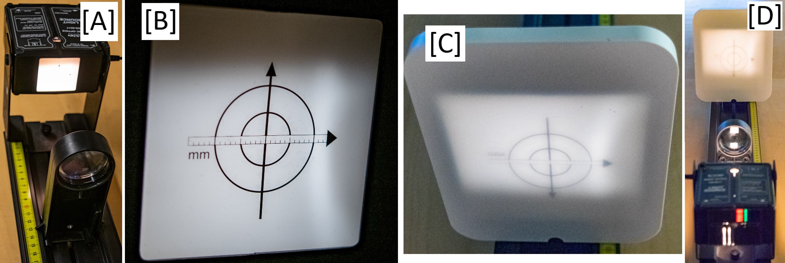
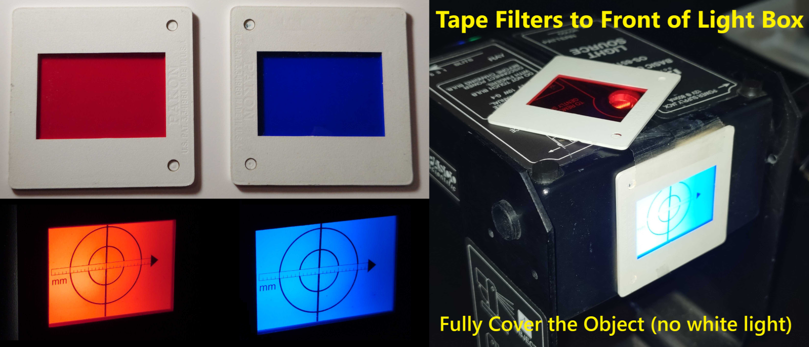
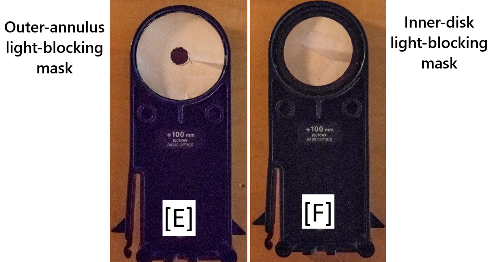
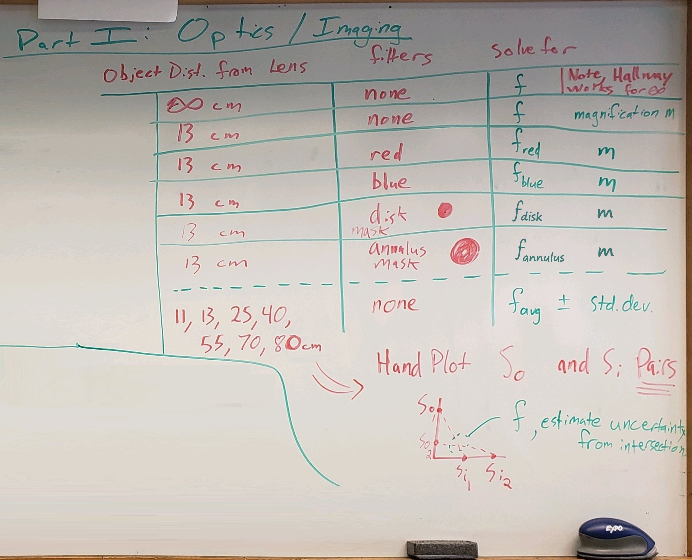

1146L-ONLY | Light – Geometric Optics and Imaging#
Background#
● Background Overview#
OVERALL GOALS
Use an object, thin-lens approximation, image screen on an optics track to:
Investigate light refraction, focal length, and magnification through lenses for light that is:
Unfiltered
Chromatically aberrated by narrow color filters
Spherically aberrated by lens shape
In today’s experiment, the behavior of a simple, bi-convex (symmetric, oval shaped), converging lens will be investigated with the setup of an illuminated object whose light will pass through a thin, converging (convex) lens and be projected onto a white screen (example in Fig. 147).
{kind=link}

Fig. 147 Light box, converging lens, screen mounted on optics track.#
● Light Rays, Lenses, Focal Lengths (Part I)#
Under many circumstances, the behavior of light can be analyzed by assuming that light travels in straight-line paths called light rays. Light rays are a representation of what is actually a very narrow beam of light. Using this representation of light, the behavior of many optical elements such as lenses and mirrors, and optical instruments such as telescopes, microscopes, and projectors can be analyzed. The use of the ray model draws heavily on geometry, and is called geometric optics.
A convex or converging lens is shaped so that all light rays that enter it parallel to its optical axis intersect (or focus) at a single point called the focal point \(F\) on the optical axis on the opposite side of the lens (shown in Fig. 148) at a distance along the optical axis from the center of the lens called the focal length \(f\) of the lens. Look closely at the top ray that goes through the converging lens. Because the index of refraction of the lens is greater than that of air, Snell’s law tells us that the ray is bent toward the perpendicular to the interface as it enters the lens. Likewise, when the ray exits the lens, it is bent away from the perpendicular. The overall effect for a converging lens is that light rays are bent toward the optical axis. To reiterate, the point at which the rays cross is the focal point \(F\) of the lens; the distance from the center of the lens to its focal point is the focal length \(f\) of the lens.
{kind=link}

Fig. 148 All object light rays that are parallel to the optical axis will focus to a single point \(F\) at a distance from the center of the thin converging lens equal to the focal length \(f\).#
Ray tracing is the technique of determining or following (tracing) the paths taken by light rays. The rules for ray tracing for thin converging lenses are:
A ray entering a lens parallel to the optical axis passes through the focal point on the other side of the lens (ray 1 in Fig. 149).
A ray passing through the center of either a converging or a diverging lens is not deviated (ray 2 in Fig. 149).
A ray that passes through the focal point exits the lens parallel to the optical axis (ray 3 in Fig. 149).
○ Thin-lens Approximation#
In addition to using the ray model of light, the lens that will be used will be analyzed under the thin-lens approximation. This approximation will assume that the thickness of the lens is very small compared with the focal length. The result of this assumption is that the bending of the rays as they pass through the lens is considered to have occurred at a plane surface through the mid-line of the lens, perpendicular to the principal axis (see example approximation illustrated in Fig. 149). As mentioned earlier, the bending (refraction) actually occurs at both the entrance and exit surfaces separated by a finite distance (illustrated again later in Fig. 150). Additionally, the paths of light rays are exactly reversible. This means that the direction of the arrows could be reversed for all of the rays in Fig. 149 and other ray diagrams shown throughout today’s manual.
{kind=link}

Fig. 149 Ray tracing light from object to inverted image. Red dots at focal points \(F\) (symmetric about symmetric lens) represent distance from lens where parallel rays from one side of the lens will pass through on the opposite side. E.g. ray 1, parallel ray from the object crosses at \(F\) on the image side after refraction. Middle ray (2) from object passing through center of lens takes a straight path towards image. Bottom ray (3) passing through focal point on object side becomes parallel to optical axis after lens. Object distance to lens is \(s_\text{o}\), image distance to lens is \(s_\text{i}\).#
The relation of the focal length and the object and image distances under the assumption of a thin lens is given by the thin-lens equation:
where \(s_\text{object}\) and \(s_\text{image}\) are the object and image distances respectively. Imaging a very distant object can reasonably approximate the focal length of a converging lens. From (162), if the object distance is very large \((s_\text{object} \rightarrow \infty)\) compared to the focal length of the lens, the image distance is essentially the focal length. That is to say, the image of a very distant object is essentially at the focal point. Very convenient distant point sources of light are stars whose images are indeed at the focal point. For our laboratory, if available, sunlight will do just fine. Closer “distant” objects in the laboratory will give reasonable approximations to the focal length of the lens used in this laboratory.
To properly use the thin-lens equation, the following sign conventions must be obeyed:
object distance \(s_\text{o}\) is:
\(+\) positive for real object (today’s use)
\(-\) negative for virtual object
image distance \(s_\text{i}\) is:
\(+\) positive for real image (i.e. if the image is on the side opposite the object, today’s use)
\(-\) negative for virtual image (i.e. if on the same side as the object)
focal length \(f\) is:
\(+\) positive for a converging lens
\(-\) negative for a diverging lens
○ Image Formation & Magnification#
We can use ray tracing to investigate different types of images that can be created by a lens. For today, our converging lens will form a real image, such as when a movie projector casts an image onto a screen. In other cases (not explored today), the image is a virtual image, which cannot be projected onto a screen. Using ray tracing for thin lenses, we can illustrate how they form images and develop equations from that to analyze properties of thin lenses.
In Fig. 150, we again have three rays from the object (tip of the red-arrow) that enter the lens, are refracted, and intersect at a single point on the opposite side of the lens. The image (tip of the arrow) is located at this point. Several important distances appear in the figure. We see \(s_\text{o}\) as object distance, \(s_\text{i}\) as image distance, \(h_\text{o}\) and \(h_\text{i}\) as the heights of the object and images respectively. Images that appear upright relative to the object have positive heights, and those that are inverted have negative heights.
{kind=link}

Fig. 150 For magnification, the height of the object and the height of the image are indicated by \(h_o\) and \(h_i\), respectively. Ray tracing is used to locate the image formed by a lens. Rays originating from the same point on the object are traced, each following one of the rules for ray tracing, so that their paths are easy to determine. The image is located at the point where the rays cross. In this case, a real image (projectable onto a screen) is formed and is inverted. Assuming scale is accurate, magnification is negative and \(|m| \lt 1\) as image is smaller than object.#
The linear magnification, \(m\), produced by a lens is defined as the ratio of the height of the image, \(h_\text{image}\), to the height of the object, \(h_\text{object}\) and is dimensionless. If \(m\) is positive, the image is upright, and if \(m\) is negative, the image is inverted. If \(|m| \gt 1\), the image is larger than the object, and if \(|m| \lt 1\), the image is smaller than the object. With this definition of magnification, and through geometrical analysis not shown here, we can also find the following relation between the vertical and horizontal object and image distances:
The minus sign accounts for the orientation of the image (upright or inverted with respect to the object) and the sign convention of the object and image distances. Another result of the thin lens approximation is the result shown in (164) which relates the effective focal length \(f\) of the combination of two thin lenses in very close proximity (perhaps in contact). The focal lengths of the individual lenses are \(f_{1}\) and \(f_{2}\).
Expanding beyond the scope of today’s lab: since diverging lenses cannot form real images, the imaging of a distant object as a method of measuring the focal length is not possible. However (164) can be used to approximate the focal length of a diverging lens by measuring the effective focal length of a known converging lens and the unknown diverging lens. Notice, the converging power of the positive lens (measured by the reciprocal of the focal length) must be greater in absolute value than the strength of the diverging lens since the effective focal length would need to be positive. This measurement of the strength of the lens by the reciprocal of the focal length is the dioptic power of the lens, measured in \(\text{m}^{-1}\).
● Lens Effects#
There are two common lens effects or aberrations (sometimes treated as a defect in high quality camera lenses or optics systems) of the simple lens we will investigate today.
○ Chromatic Aberration (Part II)#
The first common lens effect, chromatic aberration, results from the wavelength dependence of the index of refraction of the glass from which the lens is made. The change in index of refraction results in a focal length dependence on the wavelength, or color, of the light. This dependence is illustrated by the different angles by which red, green, and blue light bends in the ray diagram in Fig. 151-center. Images formed from white light illumination of an object will produce colored images, each one formed at a slightly different image distance. If such an image were produced on a screen or a piece of film, you see an image whose edges were multicolored lines (Fig. 151-left). We see that red light bends or scatters less than the blue light, so we find the focal length of the red light is longer than that of the blue light. This effect must be corrected in most optical instruments designed to be used with white light. Binoculars, for example, can become totally useless without correcting for this chromatic aberration. A ray diagram showing a lens without chromatic aberration is illustrated in Fig. 151-right; notice how all three colors’ rays intersect at the same focal point.
{kind=link}

Fig. 151 Left) Example of today’s experimental image on the screen impacted by chromatic aberration. Notice how the image further from center (top of the line) is bluer, while the image closer to center (bottom of line) is redder. Center) Wavelength-dependent (red, green, blue) light rays through lens with chromatic aberration and different focal points (and thus focal lengths) depending on wavelength. Right) Wavelength-dependent (red, green, blue) light rays through lens without chromatic aberration and a single focal point (and thus focal length) independent of wavelength.#
○ Spherical Aberration (Part III)#
The second lens effect, spherical aberration, results from the spherical shape of the lens surfaces. The result is that rays near the edge of a lens are refracted or bent more than those near the principal axis. The effective focal length of the outer rays is then smaller than the focal length of the rays closer to the center of the lens (Fig. 152-center). This so-called spherical aberration causes a large diameter beam to focus over a range of focal lengths; the edges of images can become be somewhat fuzzy as compared to when the center of the image is in focus (e.g. Fig. 152-left). By combining multiple lenses or non-spherical, correcting, and higher quality lenses, this effect can be corrected to bring the whole image back into focus (Fig. 152-right).
{kind=link}

Fig. 152 Left) Image impacted by spherical aberration. Notice how image center is crisp and in focus while edges are blurry. Center) Light rays through lens with spherical aberration and different focal points (and thus focal lengths) depending on distance from optical axis. Right) Light rays through lens without spherical aberration and a single focal point (and thus focal length) across the whole lens.#
○ Aberration Experiments#
Today’s lab will examine both the chromatic and spherical aberrations of a simple, converging lens. The chromatic aberration will be investigated by using color filters to permit the focal length measurement for specific colors (red and blue). For the spherical aberration, the focal length will be determined by measuring the focal length of the lens when only certain rays are allowed through the lens. In one case, an outer-annulus (donut-shaped) light-blocking mask will allow only light rays through a central-aperture near the center of the lens. The second case will then have an inner-disk mask placed over the center of the lens that will allow only light rays through the edge-ring near the outer edge of the lens.
● Equipment#
The following equipment is shown in Fig. 147 and Fig. 153.
Category |
Items |
|---|---|
Optical Track System |
• 1.2 m black optics track with built-in ruler for positioning all components |
Object Source |
• Light box with illuminated object mounted on track |
Lens System |
• Convex lens in lens holder |
Image Screen |
• White viewing screen for displaying image |
Filters |
• Red and blue filters (attach to light box; Fig. 154) |
Aperture Masks |
• Outer-annulus (donut-shaped) mask (Fig. 155-E) |
Measurement Tools |
• Additional rulers as needed (see table at front of room) |
{kind=link}

Fig. 153 A) Light box and lens mounted on optics track. B) Object on the light box. C) Refracted image through the lens on the white screen. D) Lightpath through lens onto the white screen.#
{kind=link}

Fig. 154 Left) Red and blue filters. Right) Filters taped over illuminated object on light box.#
{kind=link}

Fig. 155 E) Outer-annulus mask to allow light only through center of lens. F) Inner-disk mask to allow light only through edges of lens.#
Experimental Procedure#
● Preview#
PROCEDURE OVERVIEW
Investigate light refraction and geometric optics by measuring object (object-to-lens) and image (lens-to-image) distances to determine focal lengths and magnification. Do so with:
Part I: Unfiltered light for a range of object distances
Object distances \(s_\text{object} = \infty, 11, 13, 25, 40, 55, 70, 85\,\text{cm}\)
Part II: Chromatic aberration (color filters)
Red filter
Blue filter
Part III: Spherical aberration (lens shape)
Edge-ring of light rays passing through edge of lens using an inner-disk light-blocking mask
Central-aperture of light rays passing through center of lens using outer-annulus light-blocking mask
For each of the 12 cases today (summarized in Table 20), the object and image distances are determined, and the focal length determined via (162). The linear magnification from (163) will be determined by both measuring the image and object heights and comparing that ratio to the ratio of the image amd object distances.
Part |
Case |
Object Distance |
Filter / Mask |
Notes |
|---|---|---|---|---|
I.1 |
1 |
\(\infty\) |
None |
Unfiltered light |
I.2 |
2 |
11 |
None |
Unfiltered light |
I.2 |
3 |
13 |
None |
Unfiltered light |
I.2 |
4 |
25 |
None |
Unfiltered light |
I.2 |
5 |
40 |
None |
Unfiltered light |
I.2 |
6 |
55 |
None |
Unfiltered light |
I.2 |
7 |
70 |
None |
Unfiltered light |
I.2 |
8 |
85 |
None |
Unfiltered light |
II |
9 |
13 |
Red filter |
Chromatic aberration |
II |
10 |
13 |
Blue filter |
Chromatic aberration |
III |
11 |
13 |
Inner-disk mask |
Edge rays only (spherical aberration) |
III |
12 |
13 |
Outer-annulus mask |
Central rays only (spherical aberration) |
● Part I: Unfiltered, Varied Object Distances#
○ Part I: Preliminary Setup#
Create a common data table including the expected focal length as written on the lens holder, object position on the optics track, object position uncertainty on the optics track, object height and its uncertainty.
Record the expected focal length. Prepare the light box on the optics track similar to Fig. 147. The illuminated object position is set by placing the notch on the light box bracket to 0.0 cm on the optics track. Record this as the object position and estimate its uncertainty; this will be used for all trials today except the first for a distant object.
Notice the horizontal arrow on the object has a mm-scale ruler (Fig. 153-B). Using the outer circle as the object, determine and record its height \(h_\text{object}\) (or width, just be consistent for comparative height measurements later) and estimate its uncertainty \(\delta h_\text{object}\). Use a ruler as necessary to confirm size.
○ Part I.1: Distant Object#
Case 1: Using a distant object that you can assume to be effectively at ‘infinity’, use the lens (in lens holder) to focus the object’s image onto the white screen and determine the len’s focal length. A distant object might be the sun, a tree outside the laboratory window, the windows on the other end of the atrium, or at worst a light as distant as possible in the laboratory.
Estimate the object distance \(s_\text{object}\), especially if it is not a very distance object.
Measure and record the image distance \(s_\text{image}\) and estimate its uncertainty (\(\delta s_\text{image}\)) as accurately as possible.
Calculate the len’s focal length \(f\) using (162).
Calculate the uncertainty \(\delta f\) by maximizing and taking the difference (e.g. \(\delta f = 1/(1/(s_\text{image} + \delta s_\text{image})) - f\)).
Compare your experimental \(f \pm \delta f\) to the expected focal length on the lens holder by calculating the difference between the two (not percent difference, just actual magnitude of the difference).
○ Part I.2: Objects at Finite Distances#
Cases 2 – 8: Create a data table for finding focal lengths and magnification with columns for (but not limited to):
lens position and its uncertainty
image position minimum and maximum
image position and its uncertainty
object distance and its uncertainty
image distance and its uncertainty
focal length and its uncertainty
difference between experimental and expected focal lengths
image height minimum and maximum
image height and its uncertainty
magnification and its uncetainty as calculated from image & object heights
magnification and its uncertainty as calculated from image & objects distances
On the optical bench, used for this and all succeeding steps, construct the setup to be similar to Fig. 147 with the lens and screen back on the optics track.
Starting with case 2 in Table 20, place the lens at the stated distance from the object (if object is at 0.0 cm, then lens position is same as object distance). Record the lens position and estimate its uncertainty.
Move the screen to a position that produces the sharpest possible image. Determine the image position and its uncertainty by:
shifting the screen closer to the lens until you are no longer confident the image is in focus. Record the minimum image position.
before moving the screen away from this position, use a ruler to measure and record the minimum image height.
shifting the screen further away from the lens until you are again no longer confident the image is in focus. Record the maximum image position.
before moving the screen away from this position, use a ruler to measure and record the maximum image height.
Calculate the object distance \(s_\text{object}\) (from illuminated object to lens) as the difference between the lens and object positions. Calculate the object distance uncertainty \(\delta s_\text{object}\) as the sum of these two position’s uncertainties (why does it make sense to add these; what is the largest range?).
Similarly calculate the image distance \(s_\text{image}\) (from lens to image on screen) as the difference between the image and lens positions. Calculate the image distance uncertainty \(\delta s_\text{image}\) as the sum these two positions’ uncertainties.
Calculate the focal length \(f\) using (162). Calculate the uncertainty \(\delta f\) by maximizing and taking the difference (e.g. \(\delta f = 1/(1/(s_\text{object} + \delta s_\text{object}) + 1/(s_\text{image} + \delta s_\text{image})) - f\)).
Compare your experimental \(f \pm \delta f\) to the expected focal length on the lens holder by calculating the difference between the two (not percent difference, just actual magnitude of the difference). Is it also consistent with the focal length measured with a distant object?
Using the min and max image heights (based on the min and max image positioning), calculate the image height and its uncertainty by:
\(h_\text{image} = (h_\text{image,max} + h_\text{image,min}) / 2\)
\(\delta h_\text{image} = (h_\text{image,max} - h_\text{image,min}) / 2\)
Using image and object heights, calculate the image magnification \(m\) with (163) (left side of equation). Calculate the uncertainty \(\delta m\) by maximizing and taking the difference (e.g. \(\delta m = ((h_\text{image} + \delta h_\text{image}) / (h_\text{object} - \delta h_\text{object})) - m\)).
Using image and object distances, similarly calculate the image magnification \(m\) with (163) (right side of equation). Calculate the uncertainty \(\delta m\) by maximizing and taking the difference (e.g. \(\delta m = (-(s_\text{image} + \delta s_\text{image}) / (s_\text{object} - \delta s_\text{object})) - m\)). Do the two magnification methods agree; if not, why?
Repeat steps 7 – 15 for the rest of the unfiltered cases (Table 20).
Calculate the average focal length and average of the uncertainties. Do all unfiltered cases agree? Any that do not?
PLOT Object vs. Image distances:
Construct a graph where one axis is the object distances and the other is their related image distances.
It is suggested to do this by hand; graph paper is available at front of room. Mini example at bottom of Fig. 156.
For each of Case 2 – 8, plot the object distance on the object axis, its the image distance on the image axis. Connect the two points with a straight line.
In the ideal case, all of the lines should intersect at the point \((f,f)\). Visually estimate the point \((s_\text{object,plot},s_\text{image,plot})\) closest to the intersections, estimate the focal length by \(f=(s_\text{object,plot}+s_\text{image,plot})/2\). Then, draw a circle around the intersection, and use its radius to estimate \(\delta f\). Compare this determination to your average \(f\) from cases 2 – 8.
● Part II: Chromatic Aberration#
Repeat steps 7 – 15 for Cases 9 and 10 with the lens placed at a 13 cm object distance \((s_\text{object} = 13\,\text{cm}).\) Use the two color filters, red and blue, to determine the focal lengths and magnification of red and blue light.
Case 9: Hang/tape the red filter directly in front of the light-box object so all light used to form the image is red. Move the screen until the image is focused. Carefully measure the object and image distances and uncertainties, and determine the focal length and magnifications and their uncertainties.
Case 10: Same thing, but now blue.
Compare both, is one \(f\) longer than the other? Physically, why might you expect that? What about \(m\)?
● Part III: Spherical Aberration#
Repeat steps 7 – 15 for Cases 11 and 12 with the lens still placed at a 13 cm object distance \((s_\text{object} = 13\,\text{cm})\). Use the two light-blocking masks, inner-disk and outer-annulus, to determine the focal lengths and magnification of the edge-ring and central-aperture light rays.
Case 11: Center the inner-disk mask in front of the lens so only rays near the outer edge of the disk are being used to form the image. Move the screen until the image is focused. Carefully measure the object and image distances and uncertainties, and determine the focal length and magnifications and their uncertainties.
Case 11: Same thing, but with outer-annulus mask allowing only rays near the center of the lens to form the image.
Compare both, is one \(f\) longer than the other? Physically, why might you expect that? What about \(m\)?
Post-Lab Submission — Interpretation of Results#
● Finalized Spreadsheets#
Make sure to submit your finalized data table (Excel sheet).
Please include concise summary table.
Please include plot:
One plot, preferrably hand-drawn, with all non-\(\infty\), object distances paired with respective image distances from Part I (unfiltered Cases 2 – 8).
● Post-lab Writeup#
In a paragraph, summarize your error analysis. Be quantitative, not only qualitative.
What is the precision of your equipment?
What are possible sources of systematic (i.e. affecting accuracy) and random (i.e. affecting precision) errors?
What are your measurement uncertainties, and, based on these uncertainties, how do your final results change? I.e. do your different measurement uncertainties make your final results larger or smaller, by how much?
In a paragraph, summarize the results you have determined for all cases. Consider:
What was the point of today’s lab; what did we aim to discover?
How do your focal lengths from each set compare? Do they agree based on your uncertainties? Are there any outliers, why/why not?
Object distance of distant object (\(\infty\)) vs. 13 cm case?
Object distance: All non-\(\infty\) unfiltered cases?
Object distance of 13 cm for unfiltered vs. red vs. blue vs. disk vs. annulus?
For chromatic aberration (Part II): physically, why should the focal length from the red or blue filter be shorter or longer?
For spherical aberration (Part III): Physically, why does the disk or annulus filtered light produce a shorter or longer focal length?
For your plot of image vs. object distances, where do the lines from each object/image pair converge?
Does that plot-derived value \(\pm\) your estimated uncertainty from the plot agree with your average value for unfiltered focal lengths (Part I)?
On the plot, why do the lines converge?
With regards to magnification:
How does the image height relate to object distance?
Did your magnification values from height measurements agree with those expected from object & image distances? How does magnification relate to object and image distances?
The Whiteboard#
{kind=link}

Fig. 156 Overview. —- NOTE: Order of parts have changed, but on the whole, this is what you’re doing.#